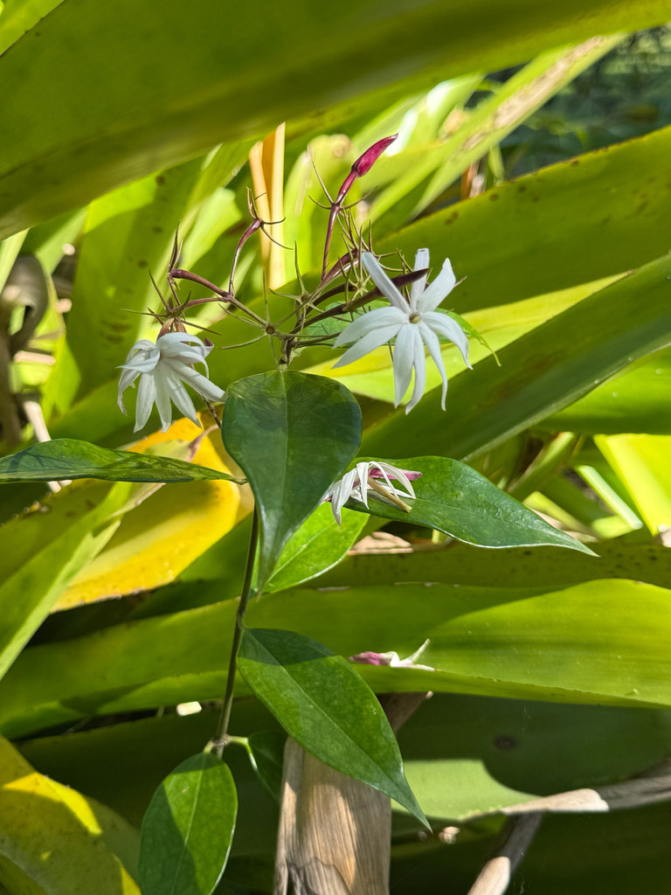

- Its flowers are 2–3 times larger than those of most other jasmines, with up to 11 slender, narrow corolla lobes radiating from a reddish-purple bud — a scale that surprises visitors expecting a small, modest bloom.
- The scent is sweetest in the evening, when the blooms perfume the air around them.
- A scrambling, semi-vining shrub, it can be grown as a mound, a hedge, or a loose climber.
- Despite sharing a common name with several unrelated plants, this one is the real thing — a genuine member of the genus Jasminum.
Native to South and Southeast Asia. Widely cultivated across the tropics and subtropics as a fragrant ornamental, and grown in warm, frost-free Florida.
- Angel-wing jasmine is prized for its long blooming season and intense fragrance. A genuine member of the genus Jasminum, it is easily distinguished from lookalikes like Confederate jasmine (Trachelospermum jasminoides) by its significantly larger flowers with longer, more slender petals and its glossier, simple (non-pinnate) leaves.
- Left unpruned, its flexible woody branches will scramble along the ground as a dense cover, but it can just as easily be trained up a trellis or sheared into a tidy, mounding hedge. The name Jasminum nitidum — still widely used in Florida nurseries and landscapes — refers to the same plant, making both names worth knowing.
The fragrant, night-scented flowers attract moths, butterflies, and other pollinators. The dense, scrambling growth provides cover and nesting sites for small birds.
A scrambling, semi-vining evergreen shrub.
White, pinwheel-shaped, fragrant; up to 11 slender corolla lobes extend from a central tube, opening from reddish-purple buds in clusters. The underside of the lobes often retains a soft purplish or pinkish tint even when fully open. Most fragrant in the evening.
Glossy, dark green, oval, in opposite or whorled arrangement.
White pinwheel flowers paired with dark purple-red buds on a glossy, loosely climbing shrub. Look closely at the underside of the open corolla lobes — a soft purplish or pinkish flush lingers there, a reliable field mark for this species. The evening fragrance confirms a true jasmine.
This is a fragrant ornamental, not a food plant, so it isn't eaten — but it's genuinely harmless.
True jasmines (Jasminum) have no known toxicity to people, unlike unrelated plants that share the 'jasmine' name, such as the highly toxic Carolina jessamine.
The ASPCA lists it as non-toxic to dogs and cats as well. Handle it freely.


- © jsea (CC-BY-NC), via iNaturalist
- © Denise Sosa (CC-BY-NC), via iNaturalist
- © Randall Carter (CC-BY-NC), via iNaturalist